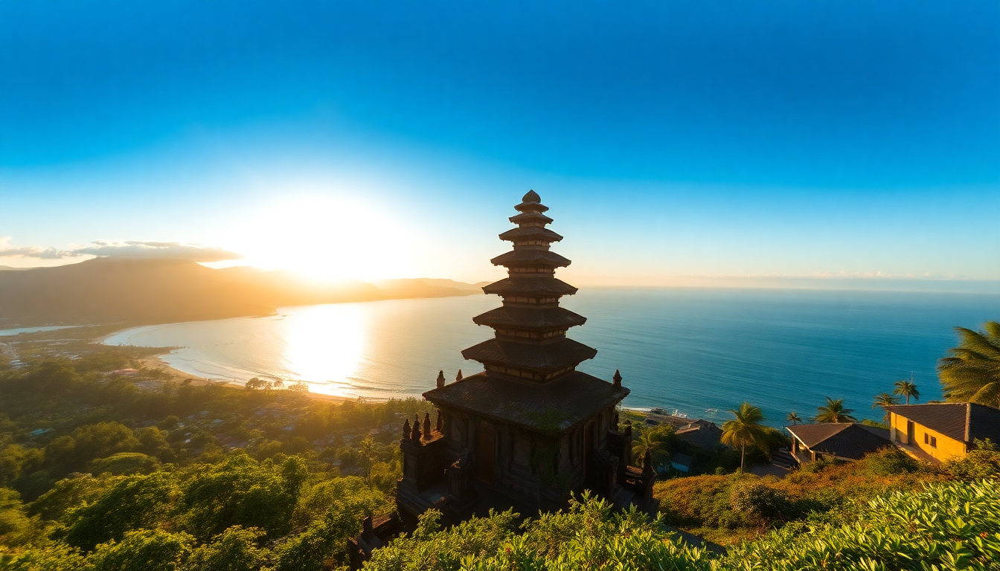

Best Beaches in Indonesia: Bali, Lombok & Komodo

I spent three weeks island-hopping through Indonesia, from the crowded shores of Bali to the empty sands of Komodo. What I found: the best beaches aren’t always the ones on Instagram. Here’s the real breakdown of where to swim, where to skip, and where to book a boat.
What are the best beaches in Bali?
Bali’s coastline is split between the party-heavy south and the quieter west and east. I’d skip Kuta entirely—too crowded, too many hawkers. Instead, head to Uluwatu for dramatic cliffs and turquoise coves. Padang Padang is small but worth the entrance fee if you go early (before 9 AM). For sunrise, Sanur Beach is calm and family-friendly, with a paved path perfect for cycling.
- Padang Padang Beach – Surf in the wet season, swim in the dry. Arrive before 9 AM to avoid queues.
- Balangan Beach – Less crowded than Dreamland, with warungs serving fresh coconut.
- Nusa Dua – Manicured, resort-lined, and safe for kids. Not wild, but consistent.
- Amed – Black sand and snorkeling at the Japanese shipwreck. Skip if you want white sand.
- Bingin Beach – Accessed via steep stairs. Worth the climb for the cliffside cafes.
Should you go to Lombok instead of Bali?
Yes, if you want fewer tourists and emptier beaches. Lombok feels like Bali did twenty years ago. Kuta Lombok (not to be confused with Kuta Bali) is a surf town with a laid-back vibe. The beaches here are wide, with golden sand and almost no development. Selong Belanak is my pick—gentle waves, a few warungs, and a long stretch of sand where you can walk for an hour without seeing another person.
- Selong Belanak Beach – Best for beginner surf lessons. We paid 200k IDR for two hours.
- Mawun Beach – A perfect crescent cove. No shade, so bring an umbrella.
- Tanjung Aan – Two bays separated by a hill. Climb it for panoramic views.
- Senggigi Beach – Overdeveloped and not worth your time. Skip it.
Which beaches in Komodo National Park are worth the trip?
Komodo’s beaches are raw and remote. You’ll need a boat tour from Labuan Bajo to reach them. Pink Beach gets all the hype—the sand is actually pink from crushed coral, and the snorkeling is world-class. But my favorite was Pantai Merah (also pink sand) because it had fewer boats. Padar Island isn’t a beach for swimming—it’s a viewpoint hike that ends with a three-bay panorama. Do the hike at sunrise to beat the heat.
- Pink Beach (Pantai Merah) – Snorkel with turtles and reef sharks. Go on a slow boat to have it nearly to yourself.
- Padar Island – Hike 20 minutes to the top. Wear sturdy shoes—the trail is rocky.
- Kelor Island – Tiny, with a short hike and a small beach. Good for a quick dip between stops.
- Kanawa Island – A private-feeling island with a resort. Day-trippers can use the beach for a fee.
When is the best time to visit Indonesia’s beaches?
Dry season (April to October) is the sweet spot. I went in July and had blue skies and calm seas across all three regions. The wet season (November to March) brings heavy rain and rough surf, especially in Bali and Lombok. Komodo can still be visited in the wet season, but the boat rides get choppy.
- Bali – Best from April to October. July and August are peak tourist months, so book accommodation early.
- Lombok – Same as Bali, but less crowded. May and June are ideal for empty beaches.
- Komodo – April to June is prime. Fewer boats, calm water, and the dragons are active.
How do you get between Bali, Lombok, and Komodo?
Fly. Don’t take the ferry unless you have a strong stomach and extra time. From Bali (Ngurah Rai) , I flew to Lombok (Lombok International Airport) in under an hour with Wings Air. From Lombok, I flew to Labuan Bajo (Komodo’s gateway) with TransNusa. Total flight cost: around $80 USD per leg. If you’re on a budget, the ferry from Bali to Lombok is 50k IDR but takes 4–5 hours and can be rough.
- Fast boat from Bali to Lombok – 2.5 hours, 300k–400k IDR. Book through your hotel, not online.
- Flight Lombok to Labuan Bajo – 1 hour, daily departures. Check Garuda or Lion Air.
- Ferry from Bali to Komodo – Don’t do this. It’s 12+ hours and unreliable.
Where should you stay near these beaches?
In Bali, I stayed at The Haven Bali in Seminyak for easy access to restaurants and the beach. For Uluwatu, Radisson Blu Bali Uluwatu has a cliffside pool and direct access to Balangan Beach. In Lombok, Jeeva Klui Resort in Senggigi is overpriced—I’d recommend Mana Eco Retreat in Kuta Lombok instead, with bamboo bungalows and a pool overlooking the surf. In Labuan Bajo, Pièce de Résistance is a boutique hotel with a view of the harbor and free shuttle to the pier.
- Bali – The Haven Bali (Seminyak) or Radisson Blu Uluwatu (cliffside).
- Lombok – Mana Eco Retreat (Kuta) or Selong Selo Resort (Selong Belanak).
- Komodo – Pièce de Résistance (Labuan Bajo) or Sudamala Resort (on Seraya Island).
What should you pack for Indonesia’s beaches?
Reef-safe sunscreen is non-negotiable—many local shops sell the bad stuff that damages coral. Bring a rash guard for snorkeling, because the sun is brutal even on cloudy days. A dry bag is essential for boat trips. And download offline maps (Google Maps or Maps.me) before you arrive, because cell service disappears on many beaches.
- Reef-safe sunscreen – Buy it before you go. Local brands like Sensatia are good.
- Rash guard – Better than reapplying sunscreen every 20 minutes.
- Dry bag – For boat rides to Komodo. Your phone will thank you.
- Water shoes – Coral and sea urchins are everywhere in Lombok and Komodo.
FAQ
Is it safe to swim at all these beaches? Mostly yes, but pay attention to currents. In Bali, beaches like Padang Padang and Balangan have strong rip currents during the wet season. In Lombok, Selong Belanak is gentle. In Komodo, always ask your boat captain—tides change fast.
Do I need a visa to visit Indonesia? Most nationalities get a 30-day visa on arrival (VOA) for 500k IDR, payable at the airport. You can extend it once for another 30 days. Do not overstay—the fine is 1 million IDR per day, and they check at departure.
Can I see Komodo dragons on the beach? Yes, but only on Rinca Island and Komodo Island, not on the pink-sand beaches. You’ll do a guided trek. The dragons are huge and not tame—keep at least 5 meters away. Our guide carried a wooden stick for safety.
Conclusion
- Bali is best for variety and infrastructure, but skip Kuta. Focus on Uluwatu and Amed.
- Lombok offers empty beaches and better surf for beginners. Stay in Kuta Lombok, not Senggigi.
- Komodo is about raw nature and snorkeling. A boat tour is mandatory—book a slow boat for a quieter experience.
- Fly between islands to save time. Ferries are cheap but rough.
- Pack reef-safe sunscreen, a rash guard, and water shoes. Download offline maps before you go.